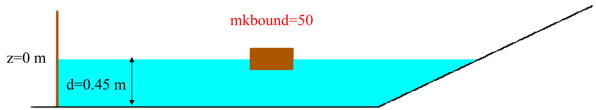
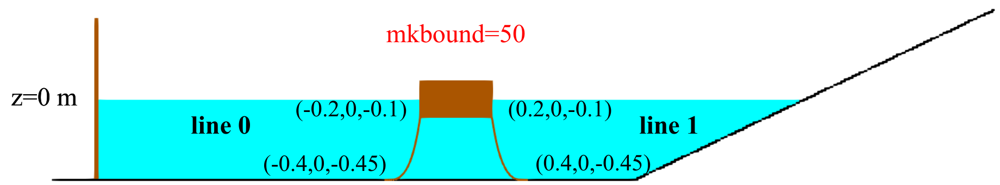

MoorDynPlus coupling¶
Under review by Iván Martínez Estévez
XML configuration of mooring systems, line properties, floating-body connections and output data in DualSPHysics v6.
Introduction¶
MoorDynPlus models dynamic mooring lines coupled to floating bodies in DualSPHysics. A lumped-mass representation divides each line into nodes connected by spring-damper segments. The segments provide axial elasticity and internal damping; the model also accounts for hydrodynamic loading and seabed interaction. Anchors remain fixed, while fairleads follow their associated floating bodies and transmit mooring forces to them.
The March 2025 XML Guide presents MoorDynPlus as a new implementation of MoorDynG. This page documents the DualSPHysics v6 MoorDynPlus interface. XML and API conventions from other MoorDyn versions must not be substituted without checking their compatibility. For the general formulation, see Coupling DualSPHysics with MoorDynPlus.
The XML excerpts below require the surrounding case definitions, geometry, bodies and parameters indicated by their XML locations. Reference-format options are identified separately.
XML configuration overview¶
The coupling configuration belongs under case/execution/special/moorings. It selects the moored floating bodies, controls the coupling's VTK/point output and contains or references the MoorDynPlus model. That model in turn defines solver/environment settings, bodies, line properties, connections and library CSV output.
The following siblings come from the two-dimensional breaking-line example. The nested model is documented in the following sections; these controls alone are not a complete case.
XML excerpt — coupling-controls. XML location: case/execution/special/moorings. Source: examples/moordynplus/02_WavesMoorings2D/CaseMoorings2D_Break_Def.xml.
<savevtk_moorings value="true" comment="Saves vtk with moorings (default=true)"/>
<savevtk_lines value="true" comment="Saves vtk with mooring lines (default=true)"/>
<savecsv_points value="true" comment="Saves csv with link points (default=true)"/>
<savevtk_points value="false" comment="Saves vtk with link points (default=false)"/>
<mooredfloatings>
<floating mkbound="50" comment="Mkbound of the Floating body the mooring is linked to"/>
</mooredfloatings>
Embedded and external configurations¶
In the embedded approach used by the package examples, moordynplus is a child of moorings. Its solverOptions, bodies, lines and savedata children are illustrated below. The reader also recognises solver as an alternative to solverOptions, and an optional connects section for shared dynamic connections. Do not add an empty connection section when the example does not use one.
The current format and coupling reader also support a separate XML file:
Reference XML excerpt — external-model. XML location: case/execution/special/moorings. Source: doc/xml_format/_FmtXML_MoorDynPlus.xml. This is a reference option, not a complete case.
In this alternative, the referenced file has a moordynplus root containing the model configuration. Without file, the reader instead loads case.execution.special.moorings.moordynplus from the main case XML. Use one approach for the model; do not combine a file reference with a second, unrelated embedded configuration.
Supply a resolvable filename and a complete external moordynplus configuration. The reference excerpt supplies the file-selection element only.
Force application and coupling outputs¶
The presentation's optional delayed application of mooring forces is retained in the current reference:
Reference XML excerpt — force-start. XML location: case/execution/special/moorings. Source: doc/xml_format/_FmtXML_MoorDynPlus.xml. This is a reference option, not a complete case.
<start value="4" ramptime="0" comment="Start time of the application of mooring forces with configurable ramp time. (default ramptime=0)" units_comment="s"/>
start/@value is the simulation time when mooring forces begin to be applied; ramptime controls the force ramp. Both are in seconds. The reader defaults both to zero when absent. This is distinct from the initial relaxation time, the internal mooring step and the output start time. The primary two-dimensional case has no explicit start; do not silently add the reference's 4 s delay to it.
| Coupling element | Purpose | Confirmed default when absent |
|---|---|---|
savevtk_lines |
Line representation in VTK | true |
savevtk_moorings |
Full mooring representation in VTK | true |
savecsv_points |
CSV for coupling force/link points | true |
savevtk_points |
VTK for coupling force/link points | false |
savevtk_nodes |
VTK with mooring node data | true |
These coupling switches are separate from moordynplus/savedata and line outputFlags. The current reference also documents reset_moorings and optional sphfluidvel interpolation. They are additional configuration choices, not settings to inject into the source case.
Environmental and seabed configuration¶
The primary two-dimensional example uses a free surface at z=0 and a depth of 0.45 m. For the flat-bottom model, the reader defines the bottom elevation as the free-surface elevation minus the depth; here it is z=-0.45 m. Retain this coordinate convention when interpreting the anchor positions.
These environmental settings are selected from the case's solverOptions. Its relaxation settings are shown separately below.
XML excerpt — environment. XML location: case/execution/special/moorings/moordynplus/solverOptions. Source: examples/moordynplus/02_WavesMoorings2D/CaseMoorings2D_Break_Def.xml.
<waterDepth value="0.45" comment="Water depth" units_comment="m"/>
<freesurface value="0" comment="Z position of the water free surface.(default=0)"/>
<kBot value="3.0e6" comment="Bottom stiffness constant. (default=3.0e6)" units_comment="Pa/m"/>
<cBot value="3.0e5" comment="Bottom damping constant. (default=3.0e5)" units_comment="Pa*s/m"/>
<dtM value="0.001" comment="Desired mooring model time step. (default=0.0001)"/>
<waveKin value="0" comment="Wave kinematics flag ( 0: neglect [the only option currently supported] ). (default=0)"/>
<writeUnits value="yes" comment="Write units line. value=[yes|no]. (default=yes)"/>
<frictionCoefficient value="0" comment="General bottom friction coefficient, as a start. (default=0.0)"/>
<fricDamp value="200" comment="Damping coefficient used to model the friction with speeds near zero. (default=200.0)"/>
<statDynFricScale value="1.0" comment="Ratio between static and dynamic friction (mu_static/mu_dynamic). (default=1.0)"/>
| Parameter in this case | Physical meaning | Units |
|---|---|---|
waterDepth |
Water depth; current reader also accepts depth |
m |
freesurface |
Global z elevation of the still free surface | m |
kBot |
Bottom contact stiffness constant | Pa/m |
cBot |
Bottom contact damping constant | Pa·s/m |
dtM |
Maximum internal mooring-model time step when automatic control is enabled | s |
frictionCoefficient |
Bottom friction coefficient; friction is an accepted alternative |
Dimensionless |
fricDamp |
Friction regularisation coefficient near zero speed | N·s/m in the current format reference |
statDynFricScale |
Ratio of static to dynamic friction | Dimensionless |
Bottom stiffness and damping govern contact response, rather than axial line stiffness. Their numerical suitability depends on discretisation and time stepping. The current reference permits per-line contact activation and optional floorgeo bathymetry; this basic example uses its flat-depth configuration.
The case's dtM value is 0.001 s. In the current reader, omitted auto means true: the value is an upper limit and the library can reduce the internal step. It must not be described as a guaranteed fixed step. The reference supports auto="false", but no change to the case's time step or automatic mode is proposed here.
writeUnits="yes" controls output unit lines. The retained waveKin="0" setting requests no legacy wave kinematics; the current reader warns for non-zero legacy waveKin and directs users to waves instead. The old comment that it is the only supported option does not describe all current wave capabilities. Regular waves in the SPH case and library wave/fluid-velocity options require their own consistent configuration.
Initial conditions and dynamic relaxation¶
Initial line geometry is constructed before the dynamic relaxation stage. During relaxation, the library temporarily scales drag to help settle the line system, advances the model and monitors fairlead-force magnitudes. It subsequently restores drag scaling and resets the line time to the simulation origin.
XML excerpt — initial-relaxation. XML location: case/execution/special/moorings/moordynplus/solverOptions. Source: examples/moordynplus/02_WavesMoorings2D/CaseMoorings2D_Break_Def.xml.
<dtIC value="1.0" comment="Period to analyse convergence of dynamic relaxation for initial conditions. (default=1.0)" units_comment="s"/>
<cdScaleIC value="2" comment="Factor to scale drag coefficients during dynamic relaxation for initial conditions. (default=5)"/>
<threshIC value="0.001" comment="Convergence threshold for for initial conditions. (default=0.001)"/>
<tmaxIC value="1" comment="Maximum time for initial conditions without convergence.(default=0)" units_comment="s"/>
| Parameter | Meaning | Units |
|---|---|---|
dtIC |
Period between convergence analyses | s |
cdScaleIC |
Temporary multiplier for drag during relaxation | Dimensionless |
threshIC |
Threshold for relative change in fairlead-force magnitude | Dimensionless |
tmaxIC |
Relaxation time budget without convergence | s |
Convergence is assessed from relative changes in each fairlead's force magnitude over successive samples. Relaxation stops when all fairleads meet the threshold; otherwise it can reach its time budget with a nonconvergence warning.
When tmaxIC is zero, the timed relaxation loop has no iterations. A non-zero time budget requires a positive analysis period dtIC.
Defining moored floating bodies¶
Three references must agree in the coupled example: the floating boundary in the case, the selected mooredfloatings/floating/@mkbound, and the library body/@ref used by each line's bodyref. They refer to the same physical body but belong to different XML structures.

mkbound=50), showing the free-surface elevation z=0 m and water depth 0.45 m.XML excerpt — floating-boundary. XML location: case/casedef/floatings. Source: examples/moordynplus/02_WavesMoorings2D/CaseMoorings2D_Break_Def.xml.
XML excerpt — library-body. XML location: case/execution/special/moorings/moordynplus. Source: examples/moordynplus/02_WavesMoorings2D/CaseMoorings2D_Break_Def.xml.
The earlier coupling-controls excerpt selects mkbound="50"; the body above has ref="50", and the lines below use bodyref="50". These are explicit boundary references, not the line number or the body's internal creation index. The library can default an omitted ref to a creation index in other contexts, so ref and mkbound must not be treated as universally interchangeable identifiers.
Multiple bodies are supported: for example, 04_ConnectedBoxes selects bodies 45 and 50 and connects them with a line. Each fairlead must refer to a declared body, and duplicate body references are rejected. Use the matching complete source case for its geometry and associations.
Body-specific water depth¶
The original slide also illustrates body 45 with a depth override of 0.5 m. That is separate from the illustrated body 50 and its global 0.45 m depth. The updated stepped-tank case demonstrates the mechanism with different source values: body 50 has a depth of 0.9 m, while body 45 inherits the global depth.
XML excerpt — body-depth. XML location: case/execution/special/moorings/moordynplus. Source: examples/moordynplus/05_SteppedTank/CaseSteppedTank_Def.xml.
<bodies>
<body ref="50" comment="Fluid driven object to attach mooring lines.">
<depth value="0.9" comment="Water depth for current object. This value overwrites the global water depth only for its lines." units_comment="m"/>
</body>
<body ref="45" comment="Floating driven structure to attach mooring lines."/>
</bodies>
This excerpt belongs to CaseSteppedTank_Def.xml; it must not be inserted into the two-dimensional example as though it described the same system. Body depth affects the associated lines' environment and is not a replacement for checking the physical seabed and anchor coordinates.
Mooring-line mechanical and hydrodynamic properties¶
lines/linedefault supplies shared line properties. Individual line elements can override applicable properties, as the two breaking tensions do below. Shared settings simplify a multi-line system but remain case-specific values.
XML excerpt — shared-line-properties. XML location: case/execution/special/moorings/moordynplus/lines. Source: examples/moordynplus/02_WavesMoorings2D/CaseMoorings2D_Break_Def.xml.
<linedefault comment="Shared properties for each line.">
<ea value="2.9e3" comment="Line stiffness, product of elasticity modulus and cross-sectional area." units_comment="N"/>
<diameter value="3.656e-3" comment="Volume-equivalent diameter of the line." units_comment="m"/>
<massDenInAir value="0.0607" comment="Mass per unit length of the line." units_comment="kg/m"/>
<ba value="-0.8" comment="Line internal damping (BA/-zeta). (default=-0.8)" units_comment="Ns"/>
<can value="1.0" comment="Transverse added mass coefficient (with respect to line displacement). (default=1.0)"/>
<cat value="0.0" comment="Tangential added mass coefficient (with respect to line displacement). (default=0.0)"/>
<cdn value="1.6" comment="Transverse drag coefficient (with respect to frontal area, d*l). (default=1.6)"/>
<cdt value="0.05" comment="Tangential drag coefficient (with respect to surface area, π*d*l). (default=0.05)"/>
<outputFlags value="p" comment="Node output properties.(default=-) [-:None|p:Positions|v:Telocities|U:Wave Velocities|t:Tension|D:Hydrodynamic Drag Force|c=Internal Damping|s:Strain of each segment|d: rate of strain of each segment]"/>
</linedefault>
Axial stiffness and internal damping¶
The slide's stiffness relationship, confirmed by the current implementation, is
E is Young's modulus in N/m² and A is the model cross-sectional area in m²; the XML ea therefore has units N. This is axial rigidity, not a spring constant in N/m. The implementation obtains area from the volume-equivalent diameter using the circular-area convention.
Choose either ea or e for the shared definition. Slide 6 shows e=2.76246e+08 and ea=2.9e3 together, but the current reader rejects simultaneous definitions. The excerpt retains ea alone. Do not copy the slide's two entries into executable XML.
| Property | Meaning | Units / condition |
|---|---|---|
ea |
Product of Young's modulus and model area | N; alternative to e |
e |
Young's modulus | N/m²; alternative to ea |
diameter |
Volume-equivalent line diameter | m |
massDenInAir |
Line mass per unit length | kg/m |
ba |
Internal damping BA, or negative damping-ratio selector | Positive BA: N·s; negative input: dimensionless ratio convention |
breaktension |
Tension threshold for breaking | N; zero disables breaking |
The source's ba="-0.8" requests automatic damping with ratio 0.8; it does not mean negative dimensional damping of −0.8 N·s. This distinction is confirmed by the implementation and current reference, despite the older blanket “Ns” comment in the case.
Slide 6 additionally illustrates shared breaktension=500 N, segments=15, length=0.2 m and flags pv. Those illustrative settings differ from the primary two-line breaking case: the source uses 40 segments, 0.45 m lengths, line-specific 300/350 N limits and flags p. The guide preserves that source case rather than combining these separate settings.
Hydrodynamic coefficients¶
| Property | Meaning | Reference direction / area |
|---|---|---|
can |
Transverse added-mass coefficient | Normal to the line; relative to displaced volume |
cat |
Tangential added-mass coefficient | Along the line; relative to displaced volume |
cdn |
Transverse drag coefficient | Frontal area, diameter × segment length |
cdt |
Tangential drag coefficient | Surface area, π × diameter × segment length |
These coefficients are dimensionless. They control hydrodynamic loading and are separate from internal axial damping and bottom friction. The shared values 1.0, 0.0, 1.6 and 0.05 are retained from the example; they are not proposed as universal material constants.
The current format also supports bending, pretension and time-dependent property tables/files. They require their own definitions and context. No bending stiffness, target pretension or time history is invented for this example.
Node-output flags¶
outputFlags is a case-sensitive string. Combine supported characters directly, such as the pvt used by the moored-box examples. The two-dimensional case above uses only p.
| Flag | Quantity |
|---|---|
- |
No line-node output; use alone |
p |
Node positions |
v |
Node velocities |
U |
Wave velocities |
t |
Tensions |
D |
Hydrodynamic drag forces |
c |
Internal damping |
d |
Segment strain rates |
s |
Segment strains |
b |
Bottom contact forces |
f |
Applied fluid velocities |
m |
Bending forces |
The slide's uppercase C is not in the current accepted character set; use lowercase c. U and D retain their uppercase spelling, and D differs from lowercase d. A leading - disables node output in the reader; do not mix it into a purported active combination. A line's savedata="false" attribute also disables its node-output branch. Selecting a quantity does not by itself enable the physical model supplying that quantity.
Mooring-line geometry and connections¶
Each line requires two active connection elements. The current reader accepts both vesselconnection/fixconnection used by these cases and the shorter vessel/fix names in the format reference. Vessel connections are fairleads on a declared body; fixed connections are anchors. Shared dynamic connect endpoints require a corresponding definition in connects and are a separate topology.

XML excerpt — two-lines. XML location: case/execution/special/moorings/moordynplus/lines. Source: examples/moordynplus/02_WavesMoorings2D/CaseMoorings2D_Break_Def.xml.
<line>
<vesselconnection bodyref="50" x="-0.2" y="0.0" z="-0.1"/>
<fixconnection x="-0.4" y="0.0" z="-0.45"/>
<length value="0.45" comment="Unstretched length." units_comment="(m)"/>
<segments value="40"/>
<breaktension value="300" comment="Maximun value of tension for the lines. value=0 Break Tension is not used. (default=0)" units_comment="N"/>
</line>
<line>
<vesselconnection bodyref="50" x="0.2" y="0.0" z="-0.1"/>
<fixconnection x="0.4" y="0.0" z="-0.45"/>
<length value="0.45" comment="Unstretched length." units_comment="(m)"/>
<segments value="40"/>
<breaktension value="350" comment="Maximun value of tension for the lines. value=0 Break Tension is not used. (default=0)" units_comment="N"/>
</line>
The first line is line 0 and the second is line 1 in the reader's sequential numbering. Their IDs are not invented XML attributes. Coordinates are initial global case positions in metres; the fairlead positions are subsequently driven by the coupled body. They are not offsets to add again to the body's centre.
| Setting | Line 0 | Line 1 |
|---|---|---|
| Body reference | 50 | 50 |
| Fairlead (m) | (−0.2, 0, −0.1) | (0.2, 0, −0.1) |
| Fixed anchor (m) | (−0.4, 0, −0.45) | (0.4, 0, −0.45) |
| Unstretched length (m) | 0.45 | 0.45 |
| Segments | 40 | 40 |
| Breaking limit (N) | 300 | 350 |
length is the unstretched line length, rather than the straight-line endpoint distance. segments specifies the discretisation: N segments have N+1 nodes, so each 40-segment line has 41 nodes. The diagram shows the mechanism; it is not a prescription to fabricate intermediate node coordinates. The model constructs its internal line nodes from the endpoints, unstretched length and discretisation.
The two limits belong to the breaking variant. The corresponding non-breaking input has the same endpoint geometry without these per-line breaking thresholds.
Output configuration¶
There are three distinct output layers: coupling VTK/force-point controls under moorings, connection quantities under moordynplus/savedata, and per-line node quantities selected by outputFlags. Enable and interpret each layer independently.
Connection quantities and timing¶
XML excerpt — connection-output. XML location: case/execution/special/moorings/moordynplus. Source: examples/moordynplus/02_WavesMoorings2D/CaseMoorings2D_Break_Def.xml.
<savedata comment="Saves CSV with the connection properties.">
<tension value="true" comment="Stores tensions at the connections.(default: value=false)"/>
<force value="true" comment="Stores forces at the connections.(default: value=false)"/>
<velocity value="true" comment="Stores velocities at the connections.(default: value=false)"/>
<position value="true" comment="Stores positions at the connections.(default: value=false)"/>
</savedata>
These explicit value="true" selections request tensions, forces, velocities and positions at connections. Use false to disable a selection. Some older case comments say “default false”; the reader defaults a present selection without value to true. That is distinct from omitting the selection altogether. Explicit booleans avoid the ambiguity.
The source case omits a time child. The current reference shows how to specify one within savedata:
Reference XML excerpt — output-time. XML location: case/execution/special/moorings/moordynplus/savedata. Source: doc/xml_format/_FmtXML_MoorDynPlus.xml. This is a reference option, not a complete case.
<time starTime="0" endTime="4" dtOut="0.01" comment="dtOut=0 saves all steps. Defaults: starTime=0; endTime=TimeMax; dtOut=TimeOut." units_comment="s"/>
| Control | Meaning | Units |
|---|---|---|
time/@starTime |
Beginning of the output window | s |
time/@endTime |
End of the output window | s |
time/@dtOut |
Requested output interval; zero saves every output opportunity | s |
tension/@value |
Connection tension selection | Boolean; output N |
force/@value |
Connection force selection | Boolean; output N |
velocity/@value |
Connection velocity selection | Boolean; output m/s |
position/@value |
Connection position selection | Boolean; output m |
The actual attribute is starTime, exactly as in the screenshot and current reader. The slide's explanatory prose says startTime, but that spelling is not read here. The reference defaults are zero for the start, simulation TimeMax for the end and the supplied output interval for dtOut; the example values 0, 4 and 0.01 above are not mandatory defaults. Output is sampled when a model output opportunity reaches the requested time; this is separate from the internal dtM setting. The compatibility alias output is also accepted for the savedata section.
Files and output locations¶
For the embedded path, the coupling creates moordynplus_data/ inside the configured simulation output directory. The writer uses the connection files MoorDynPlus_tension.csv, MoorDynPlus_force.csv, MoorDynPlus_velocity.csv and MoorDynPlus_position.csv. The corresponding selections determine which quantities are written. Current code additionally supports bending output; it is not enabled in the source excerpt.
Per-line node files are separate: for example, Line_0_pos.csv corresponds to node positions selected with p; Line_0_vel.csv and Line_0_tension.csv are velocity and tension counterparts when selected. These node files must not be confused with the connection CSVs.
Coupling geometry appears under MooringsVtk/, with Moorings_<sequence>.vtk, MooringsLines_<sequence>.vtk and MooringsNodes_<sequence>.vtk according to the enabled switches. Coupling force-point CSV/VTK data is managed by the force-point component, independently of the library's connection and node selections.
The output directory need not be named Case_out.
Related examples and documentation¶
- Coupling DualSPHysics with MoorDynPlus — formulation and background.
- MoorDynPlus Examples Catalogue — original descriptions and videos.
- Moored-box configurations — body-to-anchor and body-to-body cases.
- Two-dimensional moored box in waves — related non-breaking and breaking configurations.
- MoorDynPlus source repository — accessible project source reference.
- Historical MoorDyn formulation page — the presentation's background link. The page identifies itself as being phased out; use the DualSPHysics v6 MoorDynPlus format reference for the XML schema.
The format reference is doc/xml_format/_FmtXML_MoorDynPlus.xml. It contains alternative illustrations and explanatory fragments, rather than a standalone executable case. Use the complete package cases cited above for their surrounding configuration.
Full MoorDynPlus XML format reference¶
The complete MoorDynPlus XML format reference is provided below. It documents the configuration structure, available parameters and alternative options. This is a format reference, not a standalone executable simulation case.
doc/xml_format/_FmtXML_MoorDynPlus.xml
<?xml version="1.0" encoding="UTF-8" ?>
<!-- --------------------------------------------------------------------------- -->
<!-- *** XML format for DualSPHysics-MoorDynPlus coupling. *** -->
<!-- --------------------------------------------------------------------------- -->
<special>
<moorings active="true">
<start value="4" ramptime="0" comment="Start time of the application of mooring forces with configurable ramp time. (default ramptime=0)" units_comment="s"/>
<savevtk_lines value="true" comment="Saves VTK with mooring lines. (default=true)"/>
<savevtk_moorings value="true" comment="Saves VTK with moorings. (default=true)"/>
<savecsv_points value="true" comment="Saves CSV with link points. (default=true)"/>
<savevtk_points value="false" comment="Saves VTK with link points. (default=false)"/>
<savevtk_nodes value="true" comment="Saves VTK with node data. (default=true)"/>
<reset_moorings value="false" comment="Restores fairlead positions in MoorDynPlus after creating force points. (default=false)"/>
<sphfluidvel value="true" minkersum="0.1" comment="Applies the SPH velocity on nodes. minkersum must be between 0 and 1. (default=false)"/>
<mooredfloatings>
<floating active="true" mkbound="45" comment="Mkbound of the floating body the mooring is linked to"/>
<floating active="true" mkbound="50" comment="Mkbound of the floating body the mooring is linked to"/>
</mooredfloatings>
<moordynplus active="true" file="moordynplus.xml" comment="MoorDynPlus configuration file"/>
</moorings>
</special>
<!-- --------------------------------------------------------------------------- -->
<!-- *** Complete structure in <moordynplus>. *** -->
<!-- --------------------------------------------------------------------------- -->
<moordynplus>
<solver/> %Global solver options (or <solverOptions/>)
<waves/> %Regular waves
<bodies/> %Fluid-driven objects
<connects/> %Virtual connections
<lines/> %Mooring lines
<savedata/> %CSV output data
</moordynplus>
<!-- --------------------------------------------------------------------------- -->
<!-- *** Solver options in <moordynplus>.<solver>. *** -->
<!-- --------------------------------------------------------------------------- -->
<moordynplus>
<!-- A complete example. -->
<solver>
<gravity x="0" y="0" z="-9.81" comment="Gravity vector (x,y,z). (default=0,0,-9.81). Legacy scalar syntax: <gravity value=\"9.81\"/>." units_comment="m/s^2"/>
<depth value="0.5" comment="Water depth. Required when <floorgeo> is not defined." units_comment="m"/>
<freesurface value="0" comment="Z position of the water free surface. (default=0)" units_comment="m"/>
<rho value="1000" comment="Water density. (default=1000)" units_comment="kg/m^3"/>
<dtM value="0.0001" auto="true" comment="Maximum mooring model time step. auto=true reduces it dynamically when needed. (default=0.0001, auto=true)" units_comment="s"/>
<kBot value="3.0e6" comment="Bottom stiffness constant. Larger values require smaller dtM." units_comment="Pa/m"/>
<cBot value="3.0e5" comment="Bottom damping constant. Large damping can dominate the automatic dtM limit." units_comment="Pa*s/m"/>
<friction value="0" comment="General bottom friction coefficient. (default=0.0)"/>
<fricDamp value="200" comment="Damping coefficient used to model friction with speeds near zero. (default=200.0)" units_comment="N*s/m"/>
<statDynFricScale value="1.0" comment="Ratio between static and dynamic friction. (default=1.0)"/>
<dtIC value="1.0" comment="Period to analyse convergence of dynamic relaxation for initial conditions. (default=1.0)" units_comment="s"/>
<cdScaleIC value="5" comment="Factor to scale drag coefficients during dynamic relaxation for initial conditions. (default=5)"/>
<threshIC value="0.001" comment="Convergence threshold for initial conditions. (default=0.001)"/>
<tmaxIC value="1" comment="Maximum time for initial conditions without convergence. (default=0)" units_comment="s"/>
</solver>
<!-- dtM automatic control. -->
<solver>
<!-- auto=true -> dtM value is only a maximum. MoorDynPlus can reduce the internal substep from the current line stiffness, bending stiffness and bottom-contact damping. -->
<!-- auto=false -> dtM value is fixed. Use only after checking stability for the selected line discretisation and contact parameters. -->
<!-- Typical robust option for contact-heavy cases: -->
<dtM value="0.001" auto="true" comment="MoorDynPlus internal step." units_comment="s"/>
<!-- Fixed-step option: -->
<dtM value="3.0e-5" auto="false" comment="MoorDynPlus internal step." units_comment="s"/>
</solver>
<!-- Bottom contact model used when <contact activate="true"/> is enabled in a line. -->
<solver>
<kBot value="3.0e6" comment="Bottom stiffness constant. Larger values require smaller dtM." units_comment="Pa/m"/>
<cBot value="3.0e5" comment="Bottom damping constant. Large damping can dominate the automatic dtM limit." units_comment="Pa*s/m"/>
<friction value="0" comment="General bottom friction coefficient. (default=0.0)"/>
<fricDamp value="200" comment="Damping coefficient used to model friction with speeds near zero. (default=200.0)" units_comment="N*s/m"/>
<statDynFricScale value="1.0" comment="Ratio between static and dynamic friction. (default=1.0)"/>
</solver>
<!-- Initial-condition dynamic relaxation. -->
<solver>
<dtIC value="1.0" comment="Period to analyse convergence of dynamic relaxation for initial conditions. (default=1.0)" units_comment="s"/>
<cdScaleIC value="5" comment="Factor to scale drag coefficients during dynamic relaxation for initial conditions. (default=5)"/>
<threshIC value="0.001" comment="Convergence threshold for initial conditions. (default=0.001)"/>
<tmaxIC value="0" comment="Maximum time for initial conditions without convergence. (default=0)" units_comment="s"/>
</solver>
<!-- Irregular sea floor geometry. Use this when anchors use z="auto" or when line contact needs bathymetry.-->
<solver>
<floorgeo file="CaseChains_FloorGeo.vtk" scell="0.1" mkbound="" zmindef="-0.5" interpolate="true" savevtk="true" comment="Compact form. Legacy VTK POLYDATA; optional mkbound filters CELL_DATA Mk values." units_comment="scell:m, zmindef:m"/>
<!-- Alternative -->
<floorgeo file="CaseFloorGeo.vtk" comment="External sea floor geometry in legacy VTK POLYDATA.">
<scell value="0.1" comment="XY sampling size." units_comment="m"/>
<mkbound value="0-10" comment="Mkbound filter."/>
<zmindef value="-0.5" comment="Z position for points outside the geometry domain." units_comment="m"/>
<interpolate value="true" comment="Interpolate values within the geometry."/>
<savevtk value="true" vtkfile="SeaFloorGeo_Contact" comment="VTK file name for the contact geometry."/>
</floorgeo>
</solver>
</moordynplus>
<!-- --------------------------------------------------------------------------- -->
<!-- *** Regular waves in <moordynplus>.<waves>. *** -->
<!-- --------------------------------------------------------------------------- -->
<moordynplus>
<waves>
<start value="4" comment="Start time. (default=0)" units_comment="s"/>
<depth value="8" comment="Fluid depth for wave generation." units_comment="m"/>
<pistonpos x="-15.5" y="0" z="0" comment="Position of the piston-type wavemaker. (default=(1,0,0))" units_comment="m"/>
<waveheight value="2" comment="Regular wave height." units_comment="m"/>
<waveperiod value="4" comment="Regular wave period." units_comment="s"/>
</waves>
</moordynplus>
<!-- --------------------------------------------------------------------------- -->
<!-- *** Fluid-driven objects in <moordynplus>.<bodies>. *** -->
<!-- --------------------------------------------------------------------------- -->
<moordynplus>
<bodies>
<body ref="45" comment="Fluid-driven object to attach mooring lines.."/>
<body ref="50" comment="Fluid-driven object to attach mooring lines.">
<depth value="0.5" comment="Water depth for this body. Overrides the global water depth only for its lines." units_comment="m"/>
</body>
</bodies>
</moordynplus>
<!-- --------------------------------------------------------------------------- -->
<!-- *** Shared connections in <moordynplus>.<connects>. *** -->
<!-- --------------------------------------------------------------------------- -->
<moordynplus>
<connects>
<connect conref="0" x="-50.0" y="0.0" z="-20.0" M="1000" V="120" comment="Shared dynamic connection." units_comment="x/y/z:m, M:kg, V:m^3">
<connect conref="1" x="-60.0" y="0.0" z="-20.0" M="1000" V="120" comment="Shared dynamic connection." units_comment="x/y/z:m, M:kg, V:m^3">
<coeffini cda="0.0" ca="0.0" comment="Optional hydrodynamic coefficients for dynamic connect nodes." units_comment="cda:m^2"/>
</connect>
</connects>
</moordynplus>
<!-- --------------------------------------------------------------------------- -->
<!-- *** Mooring lines structure in <moordynplus>.<lines>. *** -->
<!-- --------------------------------------------------------------------------- -->
<moordynplus>
<linedefault/> %Defines shared default properties for all lines.
<line/> %Defines each line (one or more) with its own properties and connections.
</moordynplus>
<!-- --------------------------------------------------------------------------- -->
<!-- *** Default line properties in <moordynplus>.<lines>.<linedefault>. *** -->
<!-- --------------------------------------------------------------------------- -->
<moordynplus>
<lines>
<!-- Shared defaults used by every <line> unless a line overrides a property. Only one <linedefault> block is allowed. -->
<linedefault comment="Shared properties for each line.">
<e value="2.76246e+08" comment="Young's modulus. Alternative to <ea>; EA is calculated as E*Area." units_comment="N/m^2"/>
<diameter value="3.656e-3" comment="Volume-equivalent diameter of the line." units_comment="m"/>
<massDenInAir value="0.0607" comment="Mass per unit length of the line." units_comment="kg/m"/>
<ba value="-0.8" comment="Line internal damping (BA/-zeta). (default=-0.8)" units_comment="Ns"/>
<can value="1.0" comment="Transverse added mass coefficient. (default=1.0)"/>
<cat value="0.0" comment="Tangential added mass coefficient. (default=0.0)"/>
<cdn value="1.6" comment="Transverse drag coefficient. (default=1.6)"/>
<cdt value="0.05" comment="Tangential drag coefficient. (default=0.05)"/>
<contact activate="true" comment="Enable bottom contact forces for this line. (default=true)"/>
<segments value="15" comment="Number of line segments."/>
<length value="0.2" comment="Unstretched length. Define only <length> or <pretension>." units_comment="m"/>
<breaktension value="120" comment="Maximum tension before breaking. value=0 disables breaking." units_comment="N"/>
<outputFlags value="pv" comment="Common node output flags. Use the zoom block below for all flags."/>
</linedefault>
<!-- Material alternatives, use EA directly and E will be calculated -->
<linedefault comment="Shared properties for each line.">
<ea value="2.9e3" comment="Line stiffness EA. Alternative to <e>." units_comment="N"/>
</linedefault>
<!-- Pretensioned lines. Use <pretension> instead of <length> and the line will be generated with the initial tension (N) . -->
<linedefault comment="Shared properties for each line.">
<pretension value="20" comment="Initial target tension used to compute unstretched length." units_comment="N"/>
</linedefault>
<!-- Disable line-bottom contact for lines.-->
<linedefault comment="Shared properties for each line.">
<contact activate="false" comment="Line ignores bottom contact forces."/>
</linedefault>
<!-- Break tension. It can be defined fo the whole line or within a range of nodes. -->
<linedefault comment="Shared properties for each line.">
<breaktension value="120" comment="Maximum tension before breaking. value=0 disables breaking." units_comment="N"/> % This applies to the whole line.
<breaktension value="150" firstnode="4" lastnode="14" comment="Maximum tension before breaking. value=0 disables breaking." units_comment="N"/> %This applies only to nodes 1..14.
</linedefault>
<!-- Full output properties for nodes. -->
<linedefault comment="Shared properties for each line.">
<outputFlags value="pvUDtcbsfdm" comment="[-:None|p:Positions|v:Velocities|U:Wave Velocities|D:Hydrodynamic Drag Force|t:Tension|c:Internal Damping|b:Bottom contact force|s:Strain|f:Fluid velocity|d:Segment strain rate|m:Bending force]"/>
</linedefault>
</lines>
</moordynplus>
<!-- --------------------------------------------------------------------------- -->
<!-- *** Mooring line definition in <moordynplus>.<lines>.<line>. *** -->
<!-- --------------------------------------------------------------------------- -->
<moordynplus>
<lines>
<!-- Body-to-anchor line. Exactly two active connection elements are required. -->
<line>
<vessel bodyref="45" x="-0.5" y="0.0" z="-2.0" comment="Fairlead linked to body." units_comment="m"/>
<fix x="-0.5" y="0.0" z="-2.50" comment="Fixed anchor." units_comment="m"/>
</line>
<!-- Body-to-body line. Exactly two active connection elements are required. -->
<line>
<vessel bodyref="45" x="-0.5" y="0.0" z="-2.0" comment="Fairlead linked to body." units_comment="m"/>
<vessel bodyref="50" x="0.5" y="0.0" z="-2.50" comment="Fairlead linked to body." units_comment="m"/>
</line>
<!-- Connect-to-connect line. Exactly two active connection elements are required. -->
<line>
<connect conref="0" comment="Connect connection."/>
<connect conref="1" comment="Connect connection."/>
</line>
<!-- Body-to-connect line. Exactly two active connection elements are required. -->
<line>
<vessel bodyref="45" x="-0.5" y="0.0" z="-2.0" comment="Fairlead linked to body." units_comment="m"/>
<connect conref="1" comment="Connect connection."/>
</line>
<!-- Body-to-connect line. Exactly two active connection elements are required. -->
<line>
<vessel bodyref="45" x="-0.5" y="0.0" z="-2.0" comment="Fairlead linked to body." units_comment="m"/>
<connect conref="1" comment="Connect connection."/>
</line>
<!-- Connect-to-fix line. Exactly two active connection elements are required. -->
<line>
<connect conref="1" comment="Connect connection."/>
<fix x="-0.5" y="0.0" z="-2.5" comment="Fixed anchor." units_comment="m"/>
</line>
<!-- Calculate Z-position automatically. It will set the Z-coordinate based on the floor (WaterDepth/depth/floorgeo). -->
<line>
<vessel bodyref="45" x="-0.5" y="0.0" z="-2.0" comment="Fairlead linked to body." units_comment="m"/>
<fix x="-0.5" y="0.0" z="auto" comment="Fixed anchor." units_comment="m"/> %Use z="auto" to set the Z-coordinate based on the floor.
</line>
<!-- Line with local material and drag overrides. -->
<line>
<vessel bodyref="50" x="-0.55" y="0" z="-2.0" comment="Fairlead linked to body ref=50." units_comment="m"/>
<fix x="-0.5" y="0.0" z="-2.5" comment="Fixed anchor." units_comment="m"/>
<length value="1.2" comment="Unstretched length." units_comment="m"/>
<segments value="24" comment="Number of line segments."/>
<ea value="3.1e3" comment="Per-line stiffness override. Define only <ea> or <e>." units_comment="N"/>
<diameter value="2.956e-3" comment="Per-line diameter override." units_comment="m"/>
<cdn value="1.8" comment="Per-line transverse drag coefficient override."/>
<cdt value="0.08" comment="Per-line tangential drag coefficient override."/>
</line>
<!-- Shared dynamic connection and pretension instead of length.-->
<line>
<vesselconnection bodyref="45" x="0.7" y="0.0" z="-2.0" comment="Fairlead linked to body ref=45." units_comment="m"/>
<connect conref="1" comment="Reference to a shared dynamic connection in <connects>."/>
<pretension value="10" comment="Alternative to <length>; computes unstretched length from target axial tension." units_comment="N"/>
<segments value="10" comment="Number of line segments."/>
</line>
<!-- Disable output data for a line.-->
<line savedata="false">
<vesselconnection bodyref="45" x="0.7" y="0.0" z="-2.0" comment="Fairlead linked to body ref=45." units_comment="m"/>
<connect conref="1" comment="Reference to a shared dynamic connection in <connects>."/>
<pretension value="10" comment="Alternative to <length>; computes unstretched length from target axial tension." units_comment="N"/>
<segments value="10" comment="Number of line segments."/>
</line>
<!-- Disable bottom contact for one line.-->
<line>
<connect conref="1" comment="Reference to a shared dynamic connection in <connects>."/>
<fixconnection x="0.7" y="0.0" z="-2.5" comment="Fixed anchor." units_comment="m"/>
<length value="0.45" comment="Unstretched length." units_comment="m"/>
<contact activate="false" comment="Disable bottom contact only for this line."/>
</line>
<!-- Bathymetry-aware anchor, bending and break tension. -->
<line savedata="true">
<vesselconnection bodyref="50" x="-0.75" y="0" z="-2.0" comment="Fairlead linked to body ref=50." units_comment="m"/>
<fixconnection x="1.25" y="0.0" z="auto" comment="z=auto uses floorgeo/bathymetry when available." units_comment="m"/>
<length value="1.6" comment="Unstretched length." units_comment="m"/>
<segments value="32" comment="Number of line segments."/>
<bending value="1.0e6" comment="Per-line bending stiffness override." units_comment="N*m^2"/>
<breaktension value="500" firstnode="1" lastnode="31" comment="Break tension and active node range." units_comment="N"/>
<outputFlags value="tbsdm" comment="Save tension, bottom contact, strain, strain rate and bending force."/>
</line>
</lines>
</moordynplus>
<!-- --------------------------------------------------------------------------- -->
<!-- *** Variable line properties definition in <moordynplus>.<lines>.<line>.*** -->
<!-- --------------------------------------------------------------------------- -->
<moordynplus>
<lines>
<!-- Inline time-variable values. Use either <ea> or <e>, not both in the same line.-->
<line comment="Inline variable values using EA.">
<vessel bodyref="45" x="0.25" y="0.75" z="-1.8" comment="Fairlead linked to body ref=45." units_comment="m"/>
<fix x="-1.2" y="0.75" z="-2.5" comment="Fixed anchor." units_comment="m"/>
<!-- Variable EA -->
<ea comment="Variable line stiffness EA. Interpolated linearly in time." units_comment="N">
<c time="0" value="2.9e3" comment="Initial EA value." units_comment="time:s, value:N"/>
<c time="5" value="3.4e3" comment="EA value at t=5 s." units_comment="time:s, value:N"/>
</ea>
<!-- Variable E -->
<e comment="Variable Young's modulus. Interpolated linearly in time." units_comment="N/m^2">
<c time="0" value="2.76246e+08" comment="Initial Young's modulus." units_comment="time:s, value:N/m^2"/>
<c time="5" value="3.00000e+08" comment="Young's modulus at t=5 s." units_comment="time:s, value:N/m^2"/>
</e>
<!-- Variable line internal damping -->
<ba comment="Variable line internal damping. Negative values are interpreted as damping ratio." units_comment="Ns">
<c time="0" value="-0.8" comment="Initial BA value or damping ratio." units_comment="time:s, value:Ns or ratio"/>
<c time="5" value="-0.5" comment="BA value or damping ratio at t=5 s." units_comment="time:s, value:Ns or ratio"/>
</ba>
<!-- Variable transverse drag coefficient -->
<cdn comment="Variable transverse drag coefficient.">
<c time="0" value="1.6" comment="Initial transverse drag coefficient." units_comment="time:s"/>
<c time="5" value="2.0" comment="Transverse drag coefficient at t=5 s." units_comment="time:s"/>
</cdn>
<!-- Variable tangential drag coefficient -->
<cdt comment="Variable tangential drag coefficient.">
<c time="0" value="0.05" comment="Initial tangential drag coefficient." units_comment="time:s"/>
<c time="5" value="0.08" comment="Tangential drag coefficient at t=5 s." units_comment="time:s"/>
</cdt>
<!-- Variable bending stiffness -->
<bending comment="Variable bending stiffness. value<=0 disables bending at that time." units_comment="N*m^2">
<c time="0" value="1.0e6" comment="Initial bending stiffness." units_comment="time:s, value:N*m^2"/>
<c time="5" value="5.0e5" comment="Bending stiffness at t=5 s." units_comment="time:s, value:N*m^2"/>
</bending>
<!-- Variable break tension -->
<breaktension firstnode="1" lastnode="14" comment="Variable break tension. Omit firstnode/lastnode to apply it to the whole line. value=0 disables breaking at that time." units_comment="N">
<c time="0" value="500" comment="Initial break tension." units_comment="time:s, value:N"/>
<c time="5" value="350" comment="Break tension at t=5 s." units_comment="time:s, value:N"/>
</breaktension>
</line>
<!-- File-based time-variable values. File paths are relative to the MoorDynPlus XML file; columns: time value.-->
<line comment="File-based variable values using EA.">
<vessel bodyref="50" x="0.25" y="0.75" z="-1.8" comment="Fairlead linked to body ref=50." units_comment="m"/>
<fix x="-1.2" y="0.75" z="-2.5" comment="Fixed anchor." units_comment="m"/>
<ea file="LineEA_Time.csv" comment="Variable line stiffness EA. columns: time value." units_comment="time:s, value:N"/>
<e file="LineE_Time.csv" comment="Variable Young's modulus. columns: time value." units_comment="time:s, value:N/m^2"/>
<ba file="LineBA_Time.csv" comment="Variable line internal damping. Negative values are interpreted as damping ratio. columns: time value." units_comment="time:s, value:Ns or ratio"/>
<cdn file="LineCDN_Time.csv" comment="Variable transverse drag coefficient. columns: time value." units_comment="time:s, value:-"/>
<cdt file="LineCDT_Time.csv" comment="Variable tangential drag coefficient. columns: time value." units_comment="time:s, value:-"/>
<bending file="LineBending_Time.csv" comment="Variable bending stiffness. value<=0 disables bending at that time. columns: time value." units_comment="time:s, value:N*m^2"/>
<breaktension file="LineBreakTension_Time.csv" comment="Variable break tension. columns: time value." units_comment="time:s, value:N"/>
</line>
</lines>
</moordynplus>
<!-- --------------------------------------------------------------------------- -->
<!-- *** Line output section in <moordynplus>.<savedata>. *** -->
<!-- --------------------------------------------------------------------------- -->
<moordynplus>
<savedata comment="Saves CSV with connection properties. <output> is also accepted for compatibility with old versions.">
<time starTime="0" endTime="4" dtOut="0.01" comment="dtOut=0 saves all steps. Defaults: starTime=0; endTime=TimeMax; dtOut=TimeOut." units_comment="s"/>
<tension value="true" comment="Stores tensions at the connections. (default=true when element exists)"/>
<force value="true" comment="Stores forces at the connections. (default=true when element exists)"/>
<velocity value="true" comment="Stores velocities at the connections. (default=true when element exists)"/>
<position value="true" comment="Stores positions at the connections. (default=true when element exists)"/>
<bending value="true" comment="Stores bending forces at the connections. (default=true when element exists)"/>
</savedata>
</moordynplus>